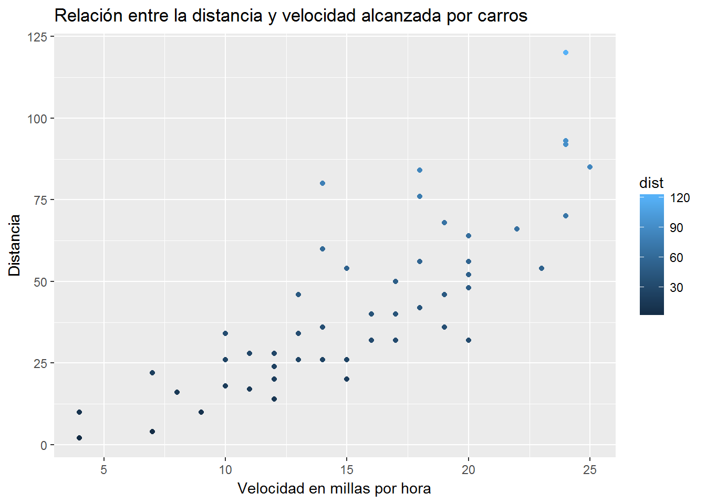

Capítulo 6 Taller R
6.1 ¿Cómo instalar las herramientas?
6.1.1 Instalando R
Las herramientas que utilizaremos será la última versión liberada del software (al momento de hacer éste taller la versión actual es R 3.3.3):
- Para usuarios Windows.
- Para usuarios MacOS
- Para usuarios Linux:
6.1.2 Instalando RStudio (Integrated Development Environment para R)
El utilizar un IDE simplifica considerablemente el trabajo a realizar con R.
Instalaciones para:
6.2 ¿Qué es R?
6.2.1 Historia
- R fué desarrollado a partir de S, un lenguaje desarrollado en Bell Labs por John Chambers y colaboradores.
- S inicialmente se corría con librerías de Fortran.
- En 1988 S fué reescrito en C, un lenguaje que también fué desarrollado en Bell Labs.
- En el libro Statistical Models in S (conocido como el white book) se documentan la funcionalidad para análsis estadísticos a éste nivel de desarrollo de S.
- La versión 4 de S se liberó en 1998 y se parece mucho a los softwares actuales derivados de S: R y S-PLUS. El libro Programing with Data (conocido como el green book) por John Chambers documenta ésta versión del lenguaje.
- La filosofía de S:
- “Queríamos que los usuarios pudieran empezar en un ambiente interactivo, donde ellos no se pensaran, de forma conciente, como programadores. Posteriormente, mientras sus necesidades se hacían más claras y su sofisticación aumentara, podrían”deslizarse" hacia la programación, cuando el lenguaje y el sistema como realizara los procesos se volvieran más importantes para ellos." (Chambers 2000)
- R fué desarrollado a partir de S en Nueva Zelanda por Ross Ihaka y Robert Gentleman. Su experiencia en el proceso está documentada en un paper publcado por la Universidad de Auckland, NZ.
- En 1993 se libera por primera vez al público.
- En 1997 se forma el R Core Group con gente asociada a S-PLUS. Éste grupo controla el código fuente de R.
- En 2000 se libera R version 1.0.0
- El 7 de Marzo de 2017 se libera R version 3.3.3
6.2.2 Generalidades
- La sintaxis de R es muy similar a S mas no su semántica.
- El software es ligero, la funcionalidad del mismo está dada en un formato modular, a través de paquetes.
- Las capacidades gráficas son sofisticadas y mejores que la mayoría de los paquetes estadísticos.
- Funciona para realizar actividades de interacción pero también contiene un podereso lenguaje de programación para el desarrollo de nuevas herramientas (usuario->programador).
- La comunidad R es muy activa y dinámica.
6.3 ¿Cómo obtener ayuda?
Como se ha comentado en las secciones anteriores, la comunidad R es muy activa, uno de los lugares donde usualmente se obtienen buenas orientaciones es en Stack Overflow. Otro lugar donde se pueden obtener información sobre una función o paquete en específico es en la documentación del paquete que se instala al descargar el mismo. En el siguiente ejemplo se puede ver cómo se explora el comando plot de los paquetes base de R:
?plot
Una vez que entiendo cómo trabaja la función plot entonces puedo probar con datos y ver qué obtengo. Ésta es una manera frecuente de resolver dudas o problemas de código.
plot(cars) Otro buen lugar para obtener información son las cheat sheets publicadas por RStudio en su mayoría.
Un recurso muy utilizado es la búsqueda en Google.
Los cursos en línea han tenido un significativo auge en los últimos años, comparto algunos que considero valen la pena, ésta lista no es exhaustiva:
6.4 Estructuras de datos en R
6.5 ¿Cómo compartir datos y análisis con estadísticos o científicos de datos?
6.6 Utilizando R
References
Chambers, John. 2000. “Stages in the Evolution of S.” March. http://ect.bell-labs.com/sl/S/history.html.